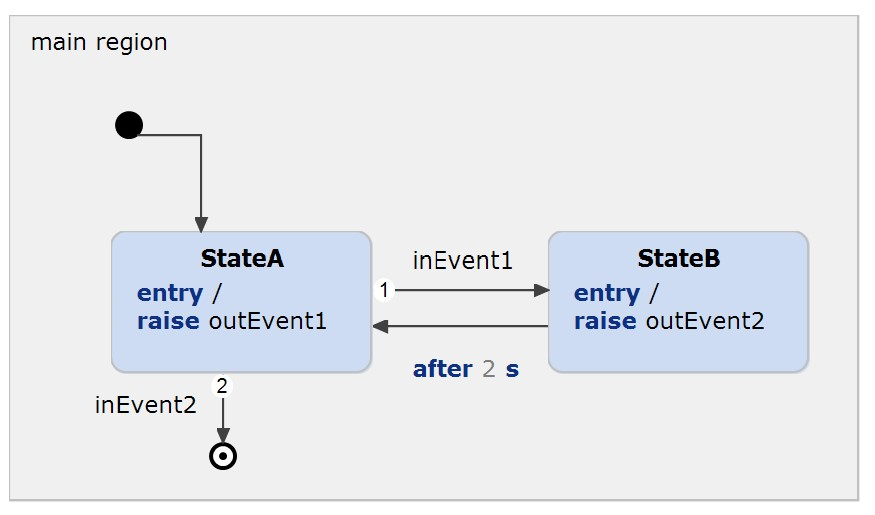

Embedded Systems Integration Guide - Arduino with @CycleBased or @EventDriven execution using Polling.
This example has been created to illustrate how an Arduino can be programmed using @CycleBased or @EventDriven execution and polling. You can find a detailed description in our documentation.
The state machine contains the following parts:

To compile the generated C code for Arduino, you should install an Eclipse plugin that can handle this and provides the needed libraries. This example uses the Sloeber plugin.
The easiest way to install the plugin is using the example wizard. Select this example, click on 'Install Dependencies...' and follow the instructions. Your IDE will restart and download the necessary Arduino libraries for you. Ensure that the installation has been completed before taking the next steps. You'll get a hint of the installation progress on the bottom right of your IDE.
Another way is using the update site, which can be found at http://eclipse.baeyens.it/. In YAKINDU Statechart Tools, simply install it by selecting Help → Install New Software in the main menu, typing or pastinghttp://eclipse.baeyens.it/update/V4/stable
into the proper field, and follow the regular procedure.